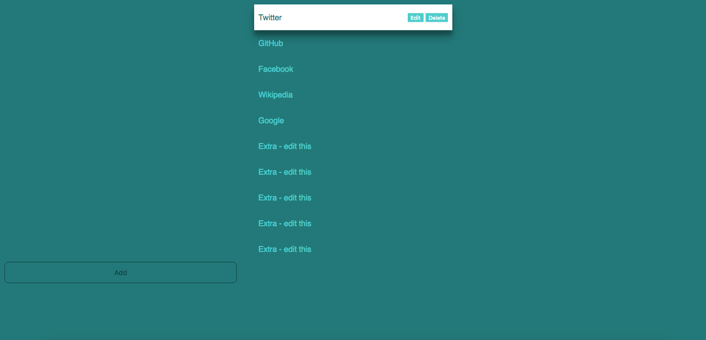

Bookmarx Chrome Extension
Make new tabs even more useful with Bookmarx!
General
What it looks like:
Technologies Used
- HTML5/CSS3
- JavaScript
- Typescript
- AngularJS
STILL A WORK-IN-PROGRESS
Any contributions would be great!
GPL V3 © 2016 Stephen Sanders